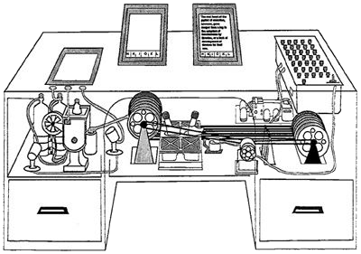
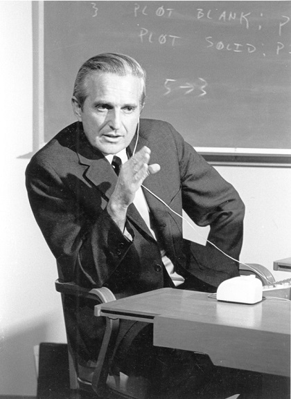
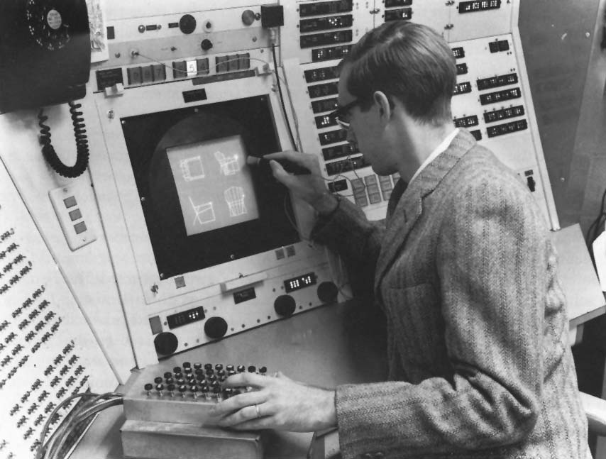
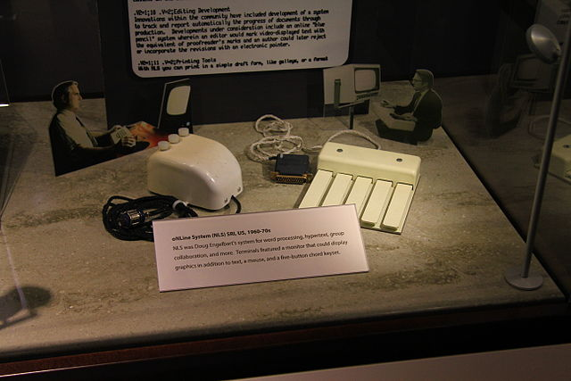
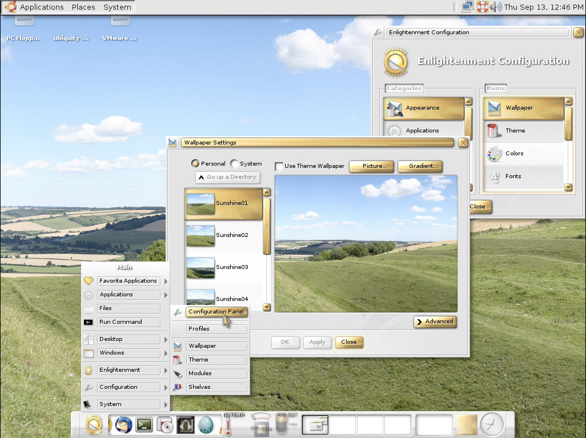
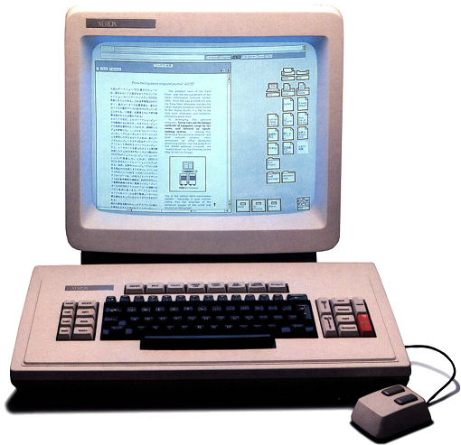
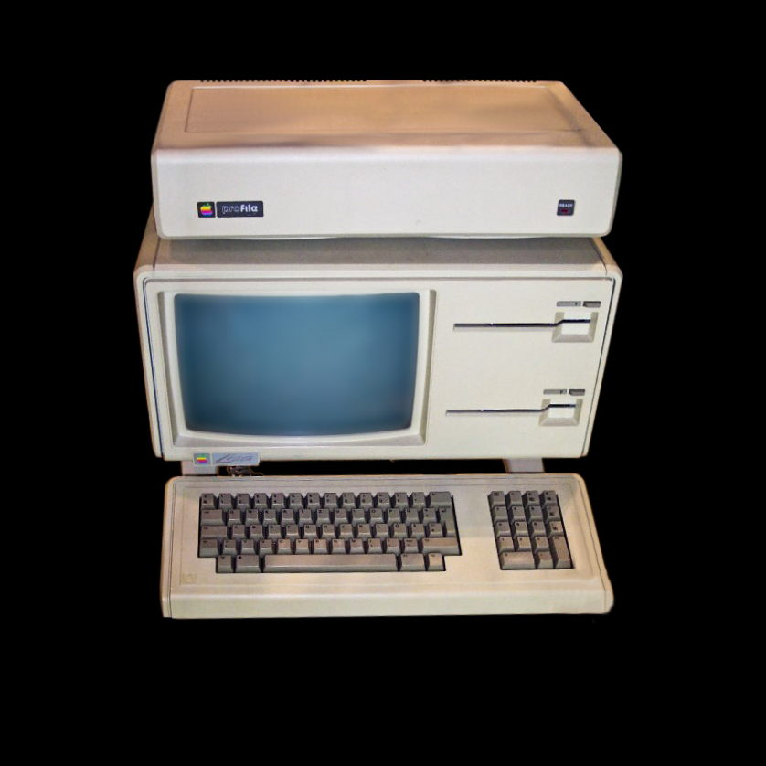
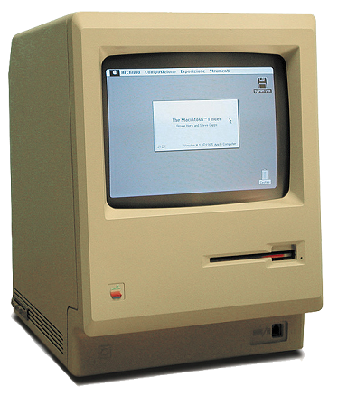

Bush, en su ensayo llamado “As we May Think”, escribe sobre Memex, un dispositivo de almacenamiento y gestión documental colectiva. Con Memex se podía recuperar, modificar, comentar y almacenar contenidos, y es gracias a Memex que se sientan las bases conceptuales de lo que después se llamaría hipertexto.
Ted Nelson aplica los conceptos de hipertexto e hipermedia en el proyecto Xanadu. Xanadu tenía la idea de un universo de documentos (“docuverso”), que estaban conectados entre sí.
Licklider crea la idea del ordenador como asociado y el ordenador como medio, idea que ha dirigido la IPO desde entonces.
El inventor estadounidense Douglas Carl Engelbart, también fue pionero en la interacción persona – ordenador. Entre sus aportes está una pantalla en la que se podía ver texto y gráficos de forma simultánea.
Engelbart también fue el creador de un dispositivo de apuntamiento (el mouse) y del primer procesador de texto que presenta las características básicas de los procesadores de texto actuales.
Ivan Sutherland crea el sistema Sketchpad, que permitía dibujar y manipular directamente gráficos por medio de un lápiz óptico, lo que permitía coger los objetos, moverlos y cambiarles el tamaño.
Se da lugar a las interfaces gráficas de usuario (GUI, Graphic User Interface) y a los sistemas de diseño asistido por computadora (CAD, Computer-Aided Design).
Engelbart demuestra el uso de múltiples ventanas dentro del proyecto NLS, un sistema que además de las múltiples ventanas usaba un mouse, apuntadores e hipertexto.
Xerox PARC populariza el mouse como un dispositivo de entrada práctico. Más adelante, en 1982 y 1984 el mouse se comercializa con el Apple Lisa y el Apple Macintosh.
Los investigadores de Xerox desarrollan el paradigma WIMP (Windows, Icons, Menus, Pointers)
Xerox lanza el primer ordenador con una interfaz gráfica de usuario: Xerox Alto. Desarrollado en el Xerox PARC, fue el primer ordenador personal de la historia en utilizar la metáfora de escritorio y un ratón.
Sale al mercado el primer sistema comercial que hace que el uso de la manipulación directa se extienda. Surge la idea de WYSIWYG (What You See Is What You Get), que se ha transmitido a través de procesadores de texto como Microsoft Word 2000.
Se lanza al mercado Apple Lisa. Lisa se caracterizó por ser la primera computadora personal de "bajo precio", para negocios y dirigida a individuos, con interfaz gráfica amigable para el usuario.
Ben Shneiderman acuña el término "Manipulación directa" y define sus distintos componentes. La manipulación directa se lleva a la práctica en Xerox con WIMP.
Ocurre el lanzamiento del Macintosh que populariza las interfaces gráficas de usuario GUI.
El Macintosh, lanzado en 1984, fue el primer producto comercial exitoso en usar un GUI de ventanas multipanel. Se usó una metáfora de escritorio, en la que los ficheros tenían el aspecto de hojas de papel. Los directorios usaban la imagen de una carpeta. Había un juego de accesorios de escritorio como la calculadora, el bloc de notas y el reloj de alarma que el usuario podía situar en el lugar de la pantalla que este quisiera; y se podían borrar archivos y carpetas arrastrándolos al icono de la papelera presente en la pantalla.
Nace la World Wide Web que populariza el hipertexto y la usabilidad, además aporta una interfaz centrada en el documento y no en la aplicación que pasa los límites entre la información local y remota.
En este año se populariza la computación ubicua: Tecnología disponible todo el tiempo y en cualquier lugar, que "permite coordinar múltiples servicios computacionales, que pueden estar en la nube, en aplicaciones, redes sociales, etc."